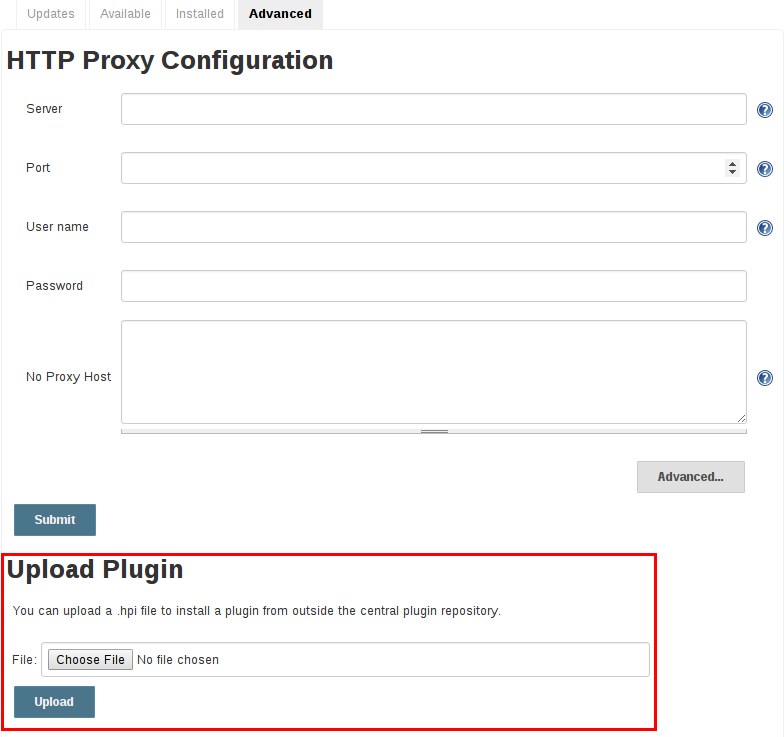

管理插件
安装插件
Jenkins 提供了几个不同的的方法在主机上安装插件:
-
在web UI使用 "插件管理器"。
-
使用Jenkins CLI
install-plugin命令。
每个方法都会导致由Jenkins加载插件，但是需要不同的级别的访问和权衡才能使用。
这两种方法要求 Jenkins 主机能够从更新中心下载元数据, 无论是由Jenkins项目运营的主更新中心 [1], 或是自定义更新中心。
插件被打包成独立的 .hpi 文件, 它含有所有必需的代码, 图像, 和其他插件成功运行所需要的资源。
从web UI
安装插件最简单，最普遍的方式是 通过 Manage Jenkins > Manage Plugins 视图, 该视图可用于Jenkins环境的管理员。 在 Available 选项卡下, 插件可以从已配置的更新中心检索和考虑:
大多数插件都能安装并立即使用，通过勾选插件旁边的框并点击 Install without restart。
|
如果可用插件的列表是空的, 那么主机可能配置不正确或者没有从更新中心下载插件元数据。 点击 Check now 按钮将会强制 Jenkins尝试连接其配置的更新中心。 |
使用Jenkins CLI
管理员也可以使用 Jenkins CLI ，它提供了一个安装插件的命令。 管理Jenkins环境或配置管理代码的脚本,可能需要安装插件，而不是在web UI中直接用户交互。 Jenkins CLI 允许命令行用户或自动化工具下载插件和它的依赖。
java -jar jenkins-cli.jar -s http://localhost:8080/ install-plugin SOURCE ... [-deploy] [-name VAL] [-restart]
Installs a plugin either from a file, an URL, or from update center.
SOURCE : If this points to a local file, that file will be installed. If
this is an URL, Jenkins downloads the URL and installs that as a
plugin.Otherwise the name is assumed to be the short name of the
plugin in the existing update center (like "findbugs"),and the
plugin will be installed from the update center.
-deploy : Deploy plugins right away without postponing them until the reboot.
-name VAL : If specified, the plugin will be installed as this short name
(whereas normally the name is inferred from the source name
automatically).
-restart : Restart Jenkins upon successful installation.高级安装
更新中心只允许安装最新发布的插件版本。在需要旧版本插件的情况下,
Jenkins管理员可以下载一个旧的 .hpi 存档，并手动安装到Jenkins主机上。
install that on the Jenkins master.
从web UI
假设已经下载了 .hpi 文件, 已登录的 Jenkins 管理员可能
从 web UI中上传文件:
-
在web UI中导航到 Manage Jenkins > Manage Plugins 页面。
-
点击 Advanced 选项卡。
-
选择*Upload Plugin* 部分下面的`.hpi`文件。
-
Upload 插件文件。

一旦插件文件被上传,Jenkins主机必须手动重启，以便更改生效。 ==== 在 master
假设系统管理员已经明确下载了 .hpi 文件, 管理员可以手动将 .hpi f文件放置在
文件系统的特定位置。
复制下载的 .hpi 文件到Jenkins主机的 JENKINS_HOME/plugins 目录(例如, 在 Debian系统 JENKINS_HOME 通常是
/var/lib/jenkins)。
在插件加载前重启服务器，确保它在Jenkins环境中可用。
|
更新站点中插件目录的名称 [1] 并不总是和插件显示的名称相同。 搜索 plugins.jenkins.io 为需要的插件提供合适到`.hpi`文件的链接。 |
更新插件
在*Manage Plugins*页面的*Updates* 选项卡中列出的更新，可以通过选中想要更新的插件的复选框并点击*Download now and install after restart*按钮来安装。

默认情况下, Jenkins主服务器会每隔24小时检查一次从更新中心检查更新。要手动触发更新检查, 只需点击*Updates*选项卡上的 Check now 按钮。
删除插件
当一个插件不再在Jenkins环境中使用时, 从Jenkins服务器中删除插件是很谨慎的。这提供了很多好处，比如减少引导或运行时的内存开销, 减少web UI中的配置选项, 并消除未来与新插件更新的冲突。
卸载插件
卸载插件最简单的方式是导航到*Manage Plugins* 页面的 Installed 选项卡。从那里, Jenkins 会自动决定哪些插件是安全的卸载, 哪些不是其他插件的依赖,并提供一个这样做的按钮。

也可以通过移除主机上 JENKINS_HOME/plugins 目录的对应的 `.hpi`文件来卸载插件。该插件会一直工作直到主机被重启。
|
如果插件的 |
卸载插件 not 删除插件创建的配置。如果有现有的工作/节点/视图/构建/等由插件创建的配置n, 在启动时，Jenkins会警告 有些配置不能被完全加载，忽略不识别的数据。
由于配置将被保留直到它们被覆盖, 重装插件将会导致这些配置值重新出现。

固定的插件
|
Jenkins 2.0中删除了固定插件特性。之后的版本没有捆绑插件,而是提供了一个安装最有用插件的向导。 |
pinned plugins 的概念适用于在Jenkins 1.x中绑定的插件, 例如 Matrix Authorization plugin。
默认情况下, 当Jenkins升级时, 其绑定的插件就会覆盖当前在`JENKINS_HOME`中安装的插件版本。
然而, 手动更新捆绑插件时, Jenkins会将该插件标记为特定的版本。在文件系统中, Jenkins 创建了一个名为 `JENKINS_HOME/plugins/PLUGIN_NAME.hpi.pinned`的空文件，来表示固定。
在Jenkins启动期间，固定插件永远不会被绑定插件覆盖。(如果固定的插件比当前捆绑的插件老，新版本的Jenkins就会发出警告)。 将一个绑定的插件更新到更新中心提供的版本是安全的。 通常获取最新的特性并修复是必要的。 绑定的版本偶尔会更新, 但不是一致的。
插件管理允许插件被显式的释放。
JENKINS_HOME/plugins/PLUGIN_NAME.hpi.pinned 文件也能手动创建/删除，以控制固定行为。如果`pinned` 文件存在, Jenkins将使用用户指定的任何插件。
如果文件不存在, Jenkins 将在启动时将插件恢复到默认版本。